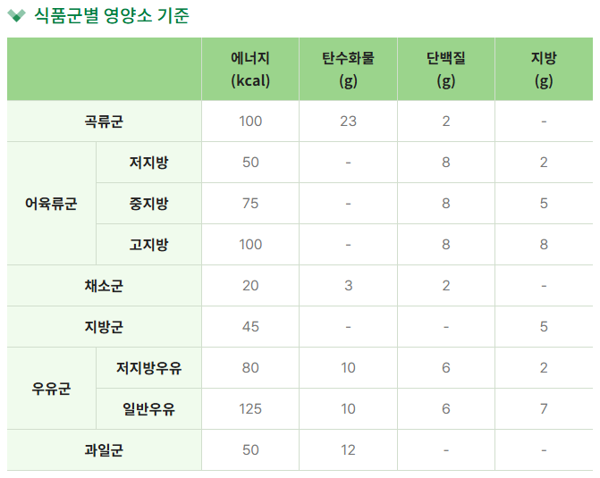

일반인의 설탕 처리 과정
일반인
- 음식물이 소화되면서 포도당이 혈액 속으로 흡수되면, 췌장에서 인슐린이라는 호르몬이 분비됩니다.
- 인슐린은 혈액 속 포도당을 근육과 지방 세포 안으로 이동시키는 역할을 하여, 혈당이 적절한 수준으로 유지됩니다.
- 인슐린은 기본적으로 24시간 소량 분비되다가, 식사 후 혈당이 오르면 분비량이 증가하여 혈당 조절을 합니다.
- 건강한 사람은 이 과정이 원활하게 이루어져 혈당이 급격히 변하지 않고 안정적으로 유지됩니다.
당뇨 환자
- 당뇨병 환자는 인슐린 분비가 부족하거나 인슐린이 제대로 작용하지 않는 인슐린 저항성 상태입니다.
- 즉, 같은 양의 포도당을 세포 안으로 넣기 위해 더 많은 인슐린이 필요하지만, 인슐린 분비가 부족하거나 세포가 인슐린에 적절히 반응하지 못합니다.
- 이로 인해 혈액 속 포도당이 분해되지 않고 높은 혈당 상태가 지속되며, 당뇨 합병증의 위험이 커지게 됩니다.
- 당뇨 환자는 식이조절, 운동, 약물, 인슐린 주입 등으로 혈당을 조절해야 하며, 정기적으로 혈당 관리와 검사를 해야 합니다.
설명
이해하기 쉽게 요약하면:
일반인: 인슐린 분비 → 혈당 세포 내 흡수 → 혈당 정상 유지
당뇨 환자: 인슐린 부족/저항성 → 혈당 세포 내 흡수 저하 → 혈당 상승 및 관리 필요
혈당 관리는 당 수치 유지와 합병증 예방에서 매우 중요합니다. 특히 당뇨 환자는 음식 선택, 운동, 약 복용 등 일상 생활 전반에서 꾸준한 관리가 필요합니다.
당뇨병이란?
우리 몸의 에너지원인 포도당(설탕)을 세포로 보내기 위해 인슐린이 필요합니다.
당뇨병은 인슐린 분비 또는 작용에 문제가 생겨 혈당이 높아지는 만성 질환입니다.
원인: 유전, 비만, 운동 부족, 잘못된 식습관 등
증상: 자주 마시고 자주 소변, 피로, 체중감소 등
진담법
공복시 128mg/dL 이상, 식후 2시간 후 혈당이 200mg/dL 이상인 경우
예방법
40대, 고기를 먹어라: 기본적으로 탄수화물 60%, 단백질 20%, 지방 20%의 균형 섭취
주의: 칼로리를 적절히 섭취해도, 영양 상태가 불균형하면 오히려 당뇨병이 악화될수 있다.
활동대사량 늘리기 = 운동운동은 인슐린 민감성을 높여 인슐린 분비량이 많지 않아도 고혈당을 조절하는데 효과적
고열량 식품 줄이기: 영양소 없으면서 열량은 매우 높은 식품
흰 밀가루
백미
흰 설탕
정제된 탄수화물
술
지방질
패스트푸드
과자류
청량음료
식품교환표
식품교환표는 식품을 영양소 구성이 비슷한 6가지 식품군으로 나누어 묶은 표입니다. 6가지 식품군은 곡류군, 어육류군, 채소군, 우유군, 과일군을 말하며, 같은 군 내에서는 자유롭게 바꿔 먹을 수 있도록 설계되어 있습니다

저GI 식품
저GI 레시피 (사진 클릭!)